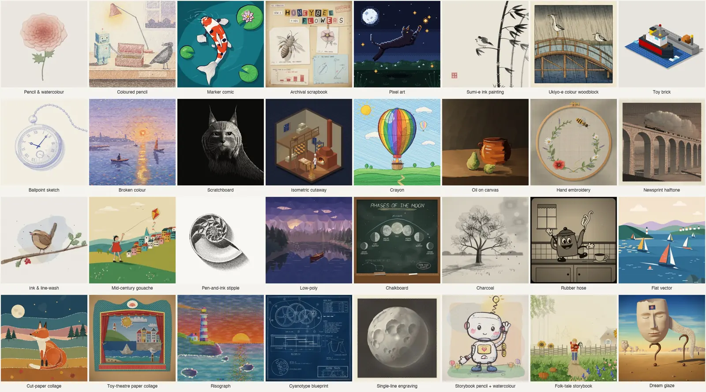
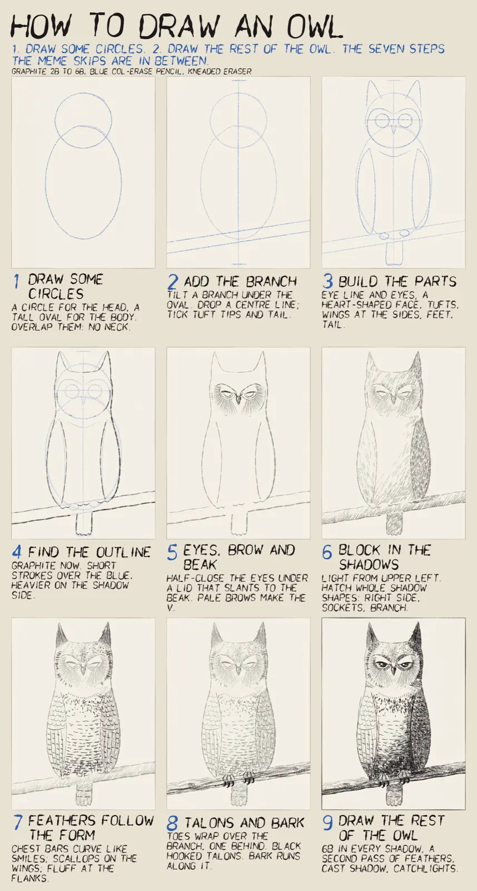

anidoodle：把手绘、动画和配乐写成可重复运行的代码
anidoodle 是 Alex Greenshpun 的开源创作技能与渲染工具：让 Claude Code、Codex、Grok Build 等智能体把画面和配乐写成程序，而不是每帧重新调用图像或视频生成模型。同一份源码可以产出静态插画、绘制过程、循环贴纸、讲解片和互动网页。
它真正想解决什么
在这里，风格不只是一句形容词，而是落笔、纸张、边缘、配色与作画顺序的具体配方。先确认一张静帧，再沿同一条时间线扩展成片；画面、配乐、字幕和导出检查尽量共用可追溯的程序描述。它适合需要反复改尺寸、保持一组插画统一、精确修改某一帧或某个音乐事件的工作。
画面、声音与交互
- ⚠️ README 自报提供 32 种画风、21 种音乐词汇及 14 种分层音效；本站未逐项运行核对。
- 静帧、逐笔绘制影片与角色动画共用绘制核心。作者声称纯函数与带种子的随机数可保证重复渲染一致；⚠️ 跨机器逐字节一致未验证，不能视作本站保证。
- 音符以数据表达，声音由引擎演奏；当前英文 README 另有可选真实乐器采样包，⚠️ 自报约 373 MB，本站未下载。不要把它概括成“所有模式永远不使用录音”。
- 网页插画使用小型 ES 模块与
<ani-doodle>元素；可对光标、滚动及表单状态作出反应，作者称包含减少动画和键盘路径。 - 产品发布片工具按节拍组织聊天、产品界面、标题与结尾卡，输出多种画幅、封面和字幕；检查是否截字、音画同步与峰值。
如何开始
README 给出 Claude Code、Codex 与 Grok Build 的插件安装命令，也允许复制标准 skill 目录给其他兼容智能体。运行引擎需要 Node 20 或更新版本，静态图依赖浏览器，动态导出还需要 ffmpeg。下方附录保留原命令供查阅；本次仅阅读文档，未安装插件、未执行任何命令或创作流程。
成本与证据边界
⚠️ “写一次、之后零 token”指复用既有程序时不必逐帧再调用生成模型，不代表本地渲染没有算力、电力、存储和维护成本，也不意味着首次写代码或后续修改免费。47 秒、1,410 帧、每帧约 60 tokens、约 100 KB 离线 HTML 都是作者示例的说法，不是通用性能承诺。
当前英文 README 风格标题为 32 种，但 craft 小节写 31 套配方；⚠️ 数字口径不一致，未替作者消除差异。官方中文 README 也落后于英文，遗漏可选采样包、3D、旁白及较新的品牌适配说明；本站附录以官方中文为底稿，按本次英文逐节补齐与修订，图片改外链，不删正文信息。
许可与素材
2026-11-07 重新读取上游 LICENSE，确认为 Apache License 2.0。README 署名 Copyright 2026 Alex Greenshpun。本页提供项目导读、完整中文 README 文本附录和许可证原文；两张静态样图来自仓库 assets/styles.jpg 和 assets/readme/lesson.jpg，转为小于 150KB 的 webp。未转载真人照片，未下载视频、音频、GIF 或可选音色包；演示与试听均仅外链。


附录一：README 全文中文译本
⚠️ 下文保留作者自述口吻，所有能力、数字、成本和确定性主张均未独立实测。以官方中文为底稿，按 2026-11-07 英文 README 补齐修订。原图与音视频仅外链；非本站验证报告。
〔原图 / 动图链接：anidoodle：一张画满代码手绘涂鸦的画桌，anidoodle 这个名字正以书法字体自己写出自己〕

发布短片，77 秒。每一帧画面、每一个声音，都是用 anidoodle 以代码制作的。
anidoodle
手绘的艺术，用代码写成。
插画、绘画延时视频、影片、讲解视频和互动网页艺术，32 种风格任你挑选。
每一笔都是一个函数，每一份配乐都经过谱写，于是同一份源码
在任何机器、任何尺寸下，都会重新画出同一张画，永远如此。
〔原图 / 动图链接：最新版本〕 〔原图 / 动图链接：Apache 2.0 许可证〕 〔原图 / 动图链接：纯代码打造〕 〔原图 / 动图链接：每次渲染，完全一致〕
支持 Claude Code · Codex · Grok Build · 以及任何能读取技能的智能体。
English · 日本語 · 简体中文 · 한국어 · Français · Español
风格 · 作画影片 · 音乐 · 你能做出什么 · 它自带了什么 · 动态效果 · 开始使用
32 种风格，随你挑选
〔原图 / 动图链接：32 幅各具风格的插画，从铅笔水彩、马克笔漫画和孔版印刷，到像素画、玩具积木、木刻、墨绘、刮画、刺绣、油画和民间故事绘本〕

每种风格都有自己独特的落笔方式：笔尖的收锋、水彩的晕染、粉笔在石板上的揉擦、剪纸边缘的撕裂感、孔版印刷滚筒的网点、一条雕刻线螺旋展开变成一轮月亮。同一个主题，在不同的风格里会呈现出完全不同的样子，就像出自 32 位不同插画师之手。每种风格还附有一段影片，按使用这种媒介的画家实际作画的顺序，逐笔展示画面如何诞生。为你的品牌选定一种风格，之后的每一张画都会出自同一双手。上面的每一幅样图，连同这张对照表本身，都是这个仓库里的代码画出来的。
全部 32 种风格，以及它们的画法
| 风格 | 画法 |
|---|---|
| 圆珠笔 | 只用一支圆珠笔，靠交叉排线形成明暗 |
| 分色笔触 | 不调匀的色彩分别点上，带着印象派的味道 |
| 粉笔黑板 | 用粉笔侧面揉擦，留下粉尘 |
| 炭笔擦画 | 炭笔画了又擦、擦了再画，保留旧痕 |
| 彩色铅笔 | 在有纹理的米色纸上，顺着方向叠加笔触 |
| 蜡笔 | 蜡质涂鸦掠过纸面的凹处 |
| 剪纸拼贴 | 撕纸与剪纸拼成画面，不画线条 |
| 蓝晒蓝图 | 在蓝晒纸上用鸭嘴笔绘制技术图 |
| 梦境釉彩 | 用树脂稀释的油彩薄涂罩染，不见笔触，轮廓一律分明 |
| 刺绣 | 在绣绷里的亚麻布上穿针走线 |
| 扁平矢量 | 清晰的几何形状，带颗粒感和长投影 |
| 民间故事绘本 | 彩绘前景逐渐融入米色纸上的铅笔线 |
| 墨线淡彩 | 先铺淡彩，再用有弹性的笔尖勾线 |
| 等距视角 | 以平面着色绘出 2:1 等距剖视图 |
| 低多边形 3D | 用代码绘制平面着色的三角面 |
| 马克笔漫画 | 平涂色块，配上一道粗轮廓 |
| 世纪中期水粉 | 不透明的哑光色块、干刷边缘和松动的线条 |
| 报纸网点 | 在新闻纸上叠印黑色网版和一种专色 |
| 油画 | 在有底色的画布上留下硬毛笔触和厚涂肌理 |
| 纸艺 | 层层剪纸和彩绘纸片，以逐格拍摄的节奏呈现 |
| 铅笔与水彩 | 水彩晕染不完全填满铅笔轮廓 |
| 像素画 | 在低分辨率网格上使用固定的 16 色调色板 |
| 孔版印刷 | 油墨滚筒套印，留下轻微错版 |
| 橡皮管动画 | 1930 年代的墨线动画，弯曲的四肢与胶片颗粒 |
| 刮画 | 从黑色涂层中刮出白线 |
| 单线雕版 | 一条不断开的螺旋线，以粗细表现明暗 |
| 点描 | 用钢笔点的疏密表现明暗 |
| 绘本 | 用铅笔和水彩描绘角色 |
| 水墨画 | 在吸水纸上只用一支饱蘸墨汁的笔 |
| 玩具积木 | 带凸点的塑料积木，一层层搭起来 |
| 复古剪贴簿 | 在旧纸上拼贴版画、剪字标题和胶带固定的卡片 |
| 木刻／浮世绘 | 在和纸上印制雕刻的主版与色版 |
每种风格都会自己画出来
〔原图 / 动图链接：四幅画同时逐笔成形：工作台前的彩铅机器人、雨中桥上的鹭鸟木版画、扑向萤火虫的像素猫，以及伴着麻雀的水墨竹子〕

每种风格都从同一份源码产出完成的画，以及按这种媒介的画家实际作画顺序制作的影片。水彩先打铅笔稿，再从浅到深铺色；木刻先印主版，再逐一印上色版；像素画先搭出纯色形状，再给像素块加阴影。没有淡入效果：每一道笔画都会伸展，每片水彩都从落笔处晕开，影片最后一帧与静态图像逐像素一致。一段延时摄影，同时也是创作过程和讲解图。
用代码谱写音乐
音符以数据写下，引擎负责发声。这个仓库本身不包含录音。音乐风格是模型用来作曲的词汇，而不是预设：共有 21 种，涵盖低保真电子、House、合成器浪潮、管弦乐、爵士、民谣和钢琴独奏。每种词汇提供音色、律动与和声语言；和弦、动机和曲式每次重新创作，因此每部影片都有自己的配乐。
安装可选音色包后，八种原声乐器使用真实乐器的录音：施坦威三角钢琴、立式钢琴、音乐会竖琴、马林巴、颤音琴、钟琴、管钟和定音鼓，并提供三个录音空间。合成器、低保真色彩、电子鼓和音效仍由代码生成；不装音色包，所有配乐依然可以原样播放。
node <skill>/engine/tools/soundfetch.mjs list # 查看安装目录及已安装内容
node <skill>/engine/tools/soundfetch.mjs get all # 下载 373 MB，校验哈希并解包；智能体须先征求你的同意
- 键盘： 以一台真实的施坦威三角钢琴为原型建模的钢琴，Rhodes 和 Wurlitzer 电钢琴，音轮风琴和管风琴，槌击乐器和钟。
- 合奏： 每位乐手独立演奏的弦乐组，铜管，长笛和单簧管，会唱出元音的合唱团，尼龙弦、钢弦和电吉他，竖琴和四种贝斯。
- 鼓： 用代码做出的真实鼓组（原声、808、909、复古颗粒、鼓刷、带定音鼓的管弦乐），每一击都略有不同。
- 真正的低保真： 12 位采样器、磁带的晃动与底噪、黑胶的噼啪声，以及让整个混音呼吸起来的底鼓。
- 混音与空间： 分轨均衡、鼓组总线、大厅、板式和卷积混响，以及达到流媒体响度标准的母带。
node tools/music.mjs check 在任何人试听之前先审核配乐：调性与调式、响度、掩蔽、每个声部的平衡，以及新颖度。听起来像已有曲子或引用了它的配乐不会通过。
| 试听 | |
|---|---|
| 降 A 大调夜曲 | 45 秒的钢琴曲：渐渐铺开、推向高潮，再归于低语 |
| 有表现力的钢琴 · 同一组音符的平板演奏 | 差别在演奏：声部、乐句和踏板 |
| 电影感·敬畏 · 低保真 · 马林巴 · 电子乐 | 更多情绪与乐器 |
| 15 秒版夜曲主题 | 作曲器会选择适合时长的曲式 |
以及音效套件：十四种分层、带种子的音效，精确到帧触发，每一次音乐都会让开一点（声音设计）。配乐怎么写：compose.md · 词汇一览。
会注意到你的网页
〔原图 / 动图链接：注册表单旁有一个手绘机器人，它看着用户输入，到密码栏时捂住眼睛，提交成功后欢呼〕

真正能放进网站的互动插画：跟随光标、响应按钮的吉祥物，随页面滚动自行画出的主视觉，还有遇到密码栏就捂眼睛的表单伙伴。只需一个小型 ES 模块和一个 <ani-doodle> 元素，无需框架；也支持减少动态效果和键盘操作。给定导致当前状态的输入，每一帧都是确定的。
用代码画出你的产品发布片
本页顶部的影片就是用 anidoodle 做的，做它的那套工具也一起附带。launch.mjs new <名称> 会给你一份待填写的规格：你的产品名、用户会输入的提示、对应的回答（一幅画出来的图、你自己产品的界面，或一段影片）、几个词和你的安装命令。它会踩着节拍剪出一支发布片：自己打字的聊天界面、像墨迹一样绽开的回答、整屏的手写字，以及一张把安装命令停留足够久、方便复制的结尾卡。
- 四种画幅，一条时间线： 16:9、1:1、4:5 和 9:16，每种画幅都重新构图，文字在手机上也清晰可读。
- 把你的产品搬上屏幕： 由数据画出的界面，元素从修改前的状态弹跳到修改后的状态。
- 声音来自画面： 每一次按键、点击和落地都有自己的音效，出现在屏幕上发生的位置，下面是为这支片子作曲的配乐。
- 可以直接发布：
launch.mjs ship <名称>渲染每种画幅，写出封面帧和字幕（.srt 与 .vtt），在交付的文件上检查音画同步和峰值电平，并让任何边缘切到文字的帧不通过。
它可以采用你产品的外观：字体、颜色、聊天窗口形状，或者直接从 Figma 导入的品牌文件。你可以选择手绘墨迹或简洁的 UI 优先画布，以 30 或 60 fps 制作，并按每帧的速度匹配运动模糊。在成片交付前，anidoodle 会像挑剔的剪辑师那样自检：文字停留是否足够阅读、是否出现幻灯片式切换或模糊退场、声音是否适合信息流，以及屏幕上的每项主张是否标注来源。
这些规则来自我们自己发布片的四次剪辑，以及优秀发布片的手艺：五秒内说清它是什么，文字永远不压在画面上，在强拍上切换，把第一帧做成缩略图。 → launch-video.md · 工具包
带上你自己的图片
- 匹配画风。 给它看一张你喜欢的画，它会研究笔触、边缘、配色和纸张，再用同样的画风创作新画。借用的是风格，不是原画。
- 重画照片。 照片可以变成刮画、木刻或单线雕版：系统会测量明暗，以及毛发或布料的方向，每道可见笔触都由代码绘制。
- 保持角色一致。 角色只需创建一次，不论镜头、姿势或从木刻到玩具积木的画风如何变化，始终是同一个角色。
学着画画
〔原图 / 动图链接：九步画一只猫头鹰：从两个圆开始，经过结构、轮廓、眼睛、阴影和羽毛，直到画完剩下的猫头鹰〕 〔原图 / 动图链接：猫头鹰一步步画出来的延时动画〕


问它怎么画一样东西，或者带来自己的画，anidoodle 就会把它重新拆成一堂课：分步图和带字幕的延时视频，每一步都说明该观察什么、怎样动笔，以及常见的错误。
你能做出什么
| 用途 | 你能得到什么 |
|---|---|
| 官网 | 一张主视觉插画，每个功能点一张点缀小图，空状态和 404 页面，全部出自同一双手。同一份源码可以导出任意尺寸的透明 PNG，视网膜屏和印刷都不在话下。 |
| 说明图和报告 | 原理图、剖视图和动态信息图，配上手绘风格的标注文字。严肃一点的话题，粉笔黑板、蓝图和圆珠笔风格都很合适。一个想法也能变成一台会运转、会自己拆开再装回去的机器，用任何风格来画。 |
| 品牌 | 一个会自己画出来的 Logo，一段片头动画，一套每次发帖都保持品牌调性的社交卡片模板。 |
| 社交和聊天 | 无限循环的动图、GIF，以及适配信息流尺寸的透明动态贴纸。 |
| 幻灯片和文档 | 一个程序生成一整套章节插画。换个种子，就能得到风格相同的姊妹图。 |
| 故事 | 分镜和动态预览，一步步长成一部任意时长、配有原创配乐的完整影片。 |
| 你自己的图片 | 带来一张画，就能用它的风格画新主题；带来一张照片，就能用 32 种画风中的任意一种重新创作，每一笔都由代码绘制。 |
| 网页 | 会追随光标、响应点击和表单，或随着页面滚动自行绘制的互动插画。还有放在标题旁的主视觉和小插图，贴合你页面的底色和品牌，浅色深色都行。 |
| 学习 | 用分步图和延时视频教你一幅画如何完成，还会指出该看什么、常见错误有哪些。 |
| 角色 | 一个角色只需构建一次，在不同镜头、姿势和风格中始终保持一致。 |
| 你的发布 | 用模板为你的产品做一支发布片：你的提示、你的画面、你的文字和安装命令，配着音乐剪好。 |
| 3D 与动态图形 | 使用 three.js 渲染 3D 场景、立体文字和片头，并与其他内容共享精确到帧的时间线。 |
| 旁白 | 与画面同步的配音，配上逐词跟随的字幕，让静音观看也能读懂影片。 |
用大白话说出你的需求就行，比如 “给我们的招聘页面画一张孔版印刷风格的灯塔，1600×900”，或者 “用粉笔黑板风格画一张解释我们定价方案的说明图”，anidoodle 会自动把它路由到合适的工作流和风格配方，只有在你没说清楚的地方才会追问。
它自带了什么
引擎只是简单的那一半。真正的功夫，是 anidoodle 替你背下来的六条心得，每一条都是先画砸了一次才换来的经验，写下来是为了让你从上一个项目结束的地方接着开始：
- 故事，让每件作品都有一个重点。一张静态图只讲一个想法、聚焦一个主体；一部短片只有一次转变、一个高潮，和一个反复出现的意象。→
storytelling.md - 写实感，来自把它说清楚。解剖结构、观察视角，以及你参考过的资料，都要交代明白，这样一只蝴蝶读起来才像是一个有身体、有翅脉的真实生物。→
realism-and-craft.md - 风格，活在笔触里。31 套完整配方（英文原文如此；标题列出 32 种风格，⚠️ 口径不一致），外加一份按场合挑风格的指南，以及自创风格的步骤。→
styles.md - 音乐，依照某种曲风的词汇为每件作品作曲，再由建模及录音乐器演奏：21 种曲风、完整的乐队和管弦乐团、所有大小调、每个段落各自的情绪，以及能适配任意时长的主题旋律。→
music/README.md - 确定性，是这套系统的承诺。纯函数加上带种子的随机数，任何人拿到源码都能重建出一模一样的作品。→
determinism-and-contract.md - 方法，让你保持速度。先用一张静态图验证效果，再一路做到底，把审批环节留给那些出错代价高的地方。→
working-method.md
每种格式都出自同一份源码：PNG、带配乐的 MP4、GIF、透明的 WebM 和动态 PNG，还有一个自包含的 HTML 文件。→ formats.md
先画，后动
| 〔原图 / 动图链接：一张蓝晒图工艺的图版正在一笔一笔画出自己〕 | 〔原图 / 动图链接：一只机械蝴蝶在水彩中苏醒，在陆莲花间轻盈飞舞〕 |
| 每一笔都是真的画出来的，顺序和手绘时一模一样。 | 蓝图在水彩中苏醒，振翅飞向自己的草地。 |


▶ 完整的 47 秒短片，记得开声音。1080×1080，配有原创配乐，每一帧与每个采样均由代码生成（作者对该示例的说明）：
一个纯函数负责画出每一帧，所以一张成品插画，就是这个函数被调用了一次；一枚贴纸，是同一个函数循环调用；一部短片，则是这个函数配上一个故事和一段配乐。三者背后，是同一套保证。
画一次，管一辈子
图像模型每渲染一帧都要烧掉 token 和算力，而且每次画出来的都不一样。代码只花这份钱一次。这部 47 秒的短片就是一个程序：写一次，就能在任何机器、任何尺寸下渲染出全部 1,410 帧画面和一整段立体声配乐，而且每次运行都是免费的。折算下来，第一遍大约每帧只花六十个 token 的代码量，之后每一遍都是零成本。一张静态插画不过几百行代码，一整个系列的图像，也不过是一份种子列表。
开始使用
Claude Code:
/plugin marketplace add alexgreensh/anidoodle
/plugin install anidoodle@alexgreensh-anidoodle
Codex:
codex plugin marketplace add alexgreensh/anidoodle
然后在 Codex 的 TUI 中输入 /plugins，安装 anidoodle。
Grok Build：
grok plugin marketplace add alexgreensh/anidoodle
grok plugin install anidoodle --trust
--trust 用于确认安装；不加它，Grok 会列出插件可以运行的内容，然后停下。也可以在 /plugins 的 Marketplace 标签页里安装。
其他智能体： anidoodle 是标准的 skill 文件夹（skills/anidoodle/SKILL.md），可以复制到任何能读取 skill 的运行环境。
然后直接说出你想要什么就行，比如 “给我们的菜谱页面画一个铅笔加水彩风格的梨”。如果你想亲自操作引擎：
node <anidoodle>/engine/tools/scaffold.mjs ~/art --still hero --film intro --format 9x16 --duration 60
cd ~/art && npm install && npx playwright-core install chromium
node tools/still.mjs hero --out out/hero.png --scale 2 # a finished illustration, print size
node tools/render.mjs intro --out out/intro.gif # a loop; also .mp4 with score, .webm with alpha
node tools/emit.mjs intro --out out/intro.html # the whole piece as one offline file
node tools/gate.mjs hero # determinism, contract and dead air in one pass
node tools/verify-export.mjs intro --file out/intro.mp4 # the file you ship, decoded and checked
node tools/music.mjs check score.ts#myScore # your score: key, loudness, balance, novelty
node tools/launch.mjs new myLaunch # a launch film spec; then: launch.mjs ship myLaunch
需要 Node 20 及以上版本。静态图只需要上面那个浏览器；只要涉及动态效果，就还会用到 ffmpeg。
emit 会输出一个大约 100 KB 的 HTML 文件，双击就能离线播放，声音也在里面。它带着完整的配方，每次打开都会从头重新画一遍。把它作为邮件附件发出去，你就等于交付了一整个工作室。
四个后端共用同一个绘图核心，而这个核心压根不在乎是谁在画：playwright、html-player、remotion、hyperframes。
示例短片
skills/anidoodle/example/ 目录里放着机械鳞翅目（Mechanical Lepidoptera）：1,410 帧，47 秒，一只机械蝴蝶自己画出自己的图纸，在水彩中苏醒过来，又把蓝图留在了草丛里。这一部作品，就是整个引擎的缩影：控制点是按照真实解剖结构手工摆放的，缓存键记录了每个像素依赖的每一个输入，配乐专为它创作，从画成到活过来，是一气呵成的一个动作。风格样图和引擎放在一起，都在 skills/anidoodle/engine/src/canvas-core/ 里，每一张的顶部都写着自己的配方。随便打开一个，改一个数字，看看会发生什么变化。
诚实是设计出来的
声音和动态效果，靠的是拿实打实的证据说话。每一句关于配乐或动作的描述，背后都有一次测量或一双人眼验证过，绿色对勾也只有在重新跑过之后才算数。正是这份较真，让同一件作品无论在哪台机器上、跑多少次，都能分毫不差地重现。
基于 Apache License 2.0 协议开源。版权所有 2026 Alex Greenshpun。
由 anidoodle 绘制，它的全部本事，都是老老实实画了几遍蝴蝶换来的。
附录二：Apache License 2.0 原文
Copyright 2026 Alex Greenshpun（署名取自 README）。
Copyright 2026 Alex Greenshpun
Apache License
Version 2.0, January 2004
http://www.apache.org/licenses/
TERMS AND CONDITIONS FOR USE, REPRODUCTION, AND DISTRIBUTION
1. Definitions.
"License" shall mean the terms and conditions for use, reproduction,
and distribution as defined by Sections 1 through 9 of this document.
"Licensor" shall mean the copyright owner or entity authorized by
the copyright owner that is granting the License.
"Legal Entity" shall mean the union of the acting entity and all
other entities that control, are controlled by, or are under common
control with that entity. For the purposes of this definition,
"control" means (i) the power, direct or indirect, to cause the
direction or management of such entity, whether by contract or
otherwise, or (ii) ownership of fifty percent (50%) or more of the
outstanding shares, or (iii) beneficial ownership of such entity.
"You" (or "Your") shall mean an individual or Legal Entity
exercising permissions granted by this License.
"Source" form shall mean the preferred form for making modifications,
including but not limited to software source code, documentation
source, and configuration files.
"Object" form shall mean any form resulting from mechanical
transformation or translation of a Source form, including but
not limited to compiled object code, generated documentation,
and conversions to other media types.
"Work" shall mean the work of authorship, whether in Source or
Object form, made available under the License, as indicated by a
copyright notice that is included in or attached to the work
(an example is provided in the Appendix below).
"Derivative Works" shall mean any work, whether in Source or Object
form, that is based on (or derived from) the Work and for which the
editorial revisions, annotations, elaborations, or other modifications
represent, as a whole, an original work of authorship. For the purposes
of this License, Derivative Works shall not include works that remain
separable from, or merely link (or bind by name) to the interfaces of,
the Work and Derivative Works thereof.
"Contribution" shall mean any work of authorship, including
the original version of the Work and any modifications or additions
to that Work or Derivative Works thereof, that is intentionally
submitted to Licensor for inclusion in the Work by the copyright owner
or by an individual or Legal Entity authorized to submit on behalf of
the copyright owner. For the purposes of this definition, "submitted"
means any form of electronic, verbal, or written communication sent
to the Licensor or its representatives, including but not limited to
communication on electronic mailing lists, source code control systems,
and issue tracking systems that are managed by, or on behalf of, the
Licensor for the purpose of discussing and improving the Work, but
excluding communication that is conspicuously marked or otherwise
designated in writing by the copyright owner as "Not a Contribution."
"Contributor" shall mean Licensor and any individual or Legal Entity
on behalf of whom a Contribution has been received by Licensor and
subsequently incorporated within the Work.
2. Grant of Copyright License. Subject to the terms and conditions of
this License, each Contributor hereby grants to You a perpetual,
worldwide, non-exclusive, no-charge, royalty-free, irrevocable
copyright license to reproduce, prepare Derivative Works of,
publicly display, publicly perform, sublicense, and distribute the
Work and such Derivative Works in Source or Object form.
3. Grant of Patent License. Subject to the terms and conditions of
this License, each Contributor hereby grants to You a perpetual,
worldwide, non-exclusive, no-charge, royalty-free, irrevocable
(except as stated in this section) patent license to make, have made,
use, offer to sell, sell, import, and otherwise transfer the Work,
where such license applies only to those patent claims licensable
by such Contributor that are necessarily infringed by their
Contribution(s) alone or by combination of their Contribution(s)
with the Work to which such Contribution(s) was submitted. If You
institute patent litigation against any entity (including a
cross-claim or counterclaim in a lawsuit) alleging that the Work
or a Contribution incorporated within the Work constitutes direct
or contributory patent infringement, then any patent licenses
granted to You under this License for that Work shall terminate
as of the date such litigation is filed.
4. Redistribution. You may reproduce and distribute copies of the
Work or Derivative Works thereof in any medium, with or without
modifications, and in Source or Object form, provided that You
meet the following conditions:
(a) You must give any other recipients of the Work or
Derivative Works a copy of this License; and
(b) You must cause any modified files to carry prominent notices
stating that You changed the files; and
(c) You must retain, in the Source form of any Derivative Works
that You distribute, all copyright, patent, trademark, and
attribution notices from the Source form of the Work,
excluding those notices that do not pertain to any part of
the Derivative Works; and
(d) If the Work includes a "NOTICE" text file as part of its
distribution, then any Derivative Works that You distribute must
include a readable copy of the attribution notices contained
within such NOTICE file, excluding those notices that do not
pertain to any part of the Derivative Works, in at least one
of the following places: within a NOTICE text file distributed
as part of the Derivative Works; within the Source form or
documentation, if provided along with the Derivative Works; or,
within a display generated by the Derivative Works, if and
wherever such third-party notices normally appear. The contents
of the NOTICE file are for informational purposes only and
do not modify the License. You may add Your own attribution
notices within Derivative Works that You distribute, alongside
or as an addendum to the NOTICE text from the Work, provided
that such additional attribution notices cannot be construed
as modifying the License.
You may add Your own copyright statement to Your modifications and
may provide additional or different license terms and conditions
for use, reproduction, or distribution of Your modifications, or
for any such Derivative Works as a whole, provided Your use,
reproduction, and distribution of the Work otherwise complies with
the conditions stated in this License.
5. Submission of Contributions. Unless You explicitly state otherwise,
any Contribution intentionally submitted for inclusion in the Work
by You to the Licensor shall be under the terms and conditions of
this License, without any additional terms or conditions.
Notwithstanding the above, nothing herein shall supersede or modify
the terms of any separate license agreement you may have executed
with Licensor regarding such Contributions.
6. Trademarks. This License does not grant permission to use the trade
names, trademarks, service marks, or product names of the Licensor,
except as required for reasonable and customary use in describing the
origin of the Work and reproducing the content of the NOTICE file.
7. Disclaimer of Warranty. Unless required by applicable law or
agreed to in writing, Licensor provides the Work (and each
Contributor provides its Contributions) on an "AS IS" BASIS,
WITHOUT WARRANTIES OR CONDITIONS OF ANY KIND, either express or
implied, including, without limitation, any warranties or conditions
of TITLE, NON-INFRINGEMENT, MERCHANTABILITY, or FITNESS FOR A
PARTICULAR PURPOSE. You are solely responsible for determining the
appropriateness of using or redistributing the Work and assume any
risks associated with Your exercise of permissions under this License.
8. Limitation of Liability. In no event and under no legal theory,
whether in tort (including negligence), contract, or otherwise,
unless required by applicable law (such as deliberate and grossly
negligent acts) or agreed to in writing, shall any Contributor be
liable to You for damages, including any direct, indirect, special,
incidental, or consequential damages of any character arising as a
result of this License or out of the use or inability to use the
Work (including but not limited to damages for loss of goodwill,
work stoppage, computer failure or malfunction, or any and all
other commercial damages or losses), even if such Contributor
has been advised of the possibility of such damages.
9. Accepting Warranty or Additional Liability. While redistributing
the Work or Derivative Works thereof, You may choose to offer,
and charge a fee for, acceptance of support, warranty, indemnity,
or other liability obligations and/or rights consistent with this
License. However, in accepting such obligations, You may act only
on Your own behalf and on Your sole responsibility, not on behalf
of any other Contributor, and only if You agree to indemnify,
defend, and hold each Contributor harmless for any liability
incurred by, or claims asserted against, such Contributor by reason
of your accepting any such warranty or additional liability.
END OF TERMS AND CONDITIONS
APPENDIX: How to apply the Apache License to your work.
To apply the Apache License to your work, attach the following
boilerplate notice, with the fields enclosed by brackets "[]"
replaced with your own identifying information. (Don't include
the brackets!) The text should be enclosed in the appropriate
comment syntax for the file format. We also recommend that a
file or class name and description of purpose be included on the
same "printed page" as the copyright notice for easier
identification within third-party archives.
Copyright [yyyy] [name of copyright owner]
Licensed under the Apache License, Version 2.0 (the "License");
you may not use this file except in compliance with the License.
You may obtain a copy of the License at
http://www.apache.org/licenses/LICENSE-2.0
Unless required by applicable law or agreed to in writing, software
distributed under the License is distributed on an "AS IS" BASIS,
WITHOUT WARRANTIES OR CONDITIONS OF ANY KIND, either express or implied.
See the License for the specific language governing permissions and
limitations under the License.